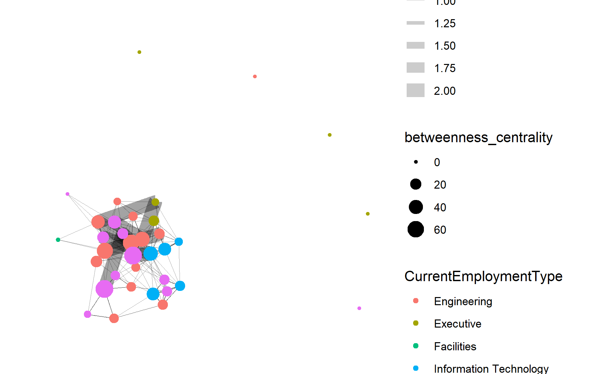
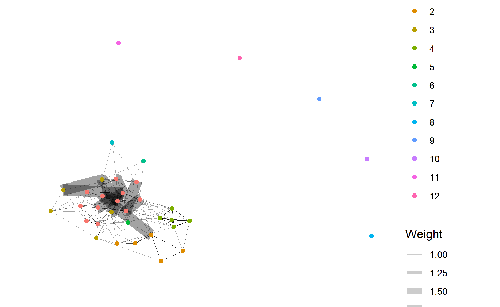

Welcome to Ong Chee Hong’s Vast Challenge 2021 Assignment.
packages = c('DT','ggiraph','plotly','tidyverse', 'raster','sf','clock','tmap',
'rgdal','dplyr', 'tidyr', 'textclean', "plotly", "forcats", "jpeg", "tiff",
"mapview","tidygraph","igraph","ggraph","visNetwork","lubridate")
for(p in packages){
if(!require(p,character.only = T)){
install.packages(p)
}
library(p,character.only = T)
}
car <- read_csv("data/mc2/car-assignments.csv")
cc <- read_csv("data/mc2/cc_data.csv", locale = locale(encoding = "ASCII"))
gps <- read_csv("data/mc2/gps.csv")
loyalty <- read_csv("data/mc2/loyalty_data.csv",locale = locale(encoding = "ASCII"))
cc$timestamp <- date_time_parse(cc$timestamp,
zone = "",
format = "%m/%d/%Y %H:%M")
loyalty$timestamp <- date_parse(loyalty$timestamp,
format = "%m/%d/%Y")
cc_dtsplit <- cc %>%
mutate(day = date_weekday_factor(cc$timestamp), date = as_date(cc$timestamp), time = format(cc$timestamp, format = "%H:%M"))
cc_dtsplit
# A tibble: 1,490 x 7
timestamp location price last4ccnum day date
<dttm> <chr> <dbl> <fct> <ord> <date>
1 2014-01-06 07:28:00 Brew've Been~ 11.3 4795 Mon 2014-01-06
2 2014-01-06 07:34:00 Hallowed Gro~ 52.2 7108 Mon 2014-01-06
3 2014-01-06 07:35:00 Brew've Been~ 8.33 6816 Mon 2014-01-06
4 2014-01-06 07:36:00 Hallowed Gro~ 16.7 9617 Mon 2014-01-06
5 2014-01-06 07:37:00 Brew've Been~ 4.24 7384 Mon 2014-01-06
6 2014-01-06 07:38:00 Brew've Been~ 4.17 5368 Mon 2014-01-06
7 2014-01-06 07:42:00 Coffee Camel~ 28.7 7253 Mon 2014-01-06
8 2014-01-06 07:43:00 Brew've Been~ 9.6 4948 Mon 2014-01-06
9 2014-01-06 07:43:00 Brew've Been~ 16.9 9683 Mon 2014-01-06
10 2014-01-06 07:47:00 Hallowed Gro~ 16.5 8129 Mon 2014-01-06
# ... with 1,480 more rows, and 1 more variable: time <chr>loyalty_dt <- rename(loyalty, date = timestamp)
car_unite <- car %>%
unite(col = "name", LastName,FirstName, sep = ", ", remove =FALSE)
gps_cleaned <- rename(gps,CarID = id)
gps_cleaned$Timestamp <- date_time_parse(gps_cleaned$Timestamp,
zone = "",
format = "%m/%d/%Y %H:%M")
cc_dtsplit_bar <- cc_dtsplit %>%
count(location) %>%
mutate(location = fct_reorder(location, n, .desc =TRUE)) %>%
plot_ly(x = ~location, y = ~n, marker = list(color = ~n)) %>%
add_bars() %>%
layout(title = "Total number of visitation by location", xaxis = list(title = ""),yaxis = list(title = "Number of visitors"))
cc_dtsplit_bar
loyalty_dt_bar <- loyalty_dt %>%
count(location) %>%
mutate(location = fct_reorder(location, n, .desc =TRUE)) %>%
plot_ly(x = ~location, y = ~n, marker = list(color = ~n)) %>%
add_bars() %>%
layout(title = "Total number of visitation by ", xaxis = list(title = ""),yaxis = list(title = "Number of visitors"))
loyalty_dt_bar
cc_loyalty_join <- cc_dtsplit %>%
inner_join(loyalty_dt, by = c("date","location", "price"))
cc_loyalty_join
# A tibble: 1,087 x 8
timestamp location price last4ccnum day date
<dttm> <chr> <dbl> <fct> <ord> <date>
1 2014-01-06 07:28:00 Brew've Been~ 11.3 4795 Mon 2014-01-06
2 2014-01-06 07:35:00 Brew've Been~ 8.33 6816 Mon 2014-01-06
3 2014-01-06 07:36:00 Hallowed Gro~ 16.7 9617 Mon 2014-01-06
4 2014-01-06 07:37:00 Brew've Been~ 4.24 7384 Mon 2014-01-06
5 2014-01-06 07:38:00 Brew've Been~ 4.17 5368 Mon 2014-01-06
6 2014-01-06 07:43:00 Brew've Been~ 9.6 4948 Mon 2014-01-06
7 2014-01-06 07:43:00 Brew've Been~ 16.9 9683 Mon 2014-01-06
8 2014-01-06 07:47:00 Hallowed Gro~ 16.5 8129 Mon 2014-01-06
9 2014-01-06 07:48:00 Hallowed Gro~ 10.7 3492 Mon 2014-01-06
10 2014-01-06 07:49:00 Coffee Camel~ 8.39 5921 Mon 2014-01-06
# ... with 1,077 more rows, and 2 more variables: time <chr>,
# loyaltynum <fct>cc_loyalty_antijoin <- cc_dtsplit %>%
anti_join(loyalty_dt, by = c("date","location", "price"))
cc_loyalty_antijoin
# A tibble: 409 x 7
timestamp location price last4ccnum day date
<dttm> <chr> <dbl> <fct> <ord> <date>
1 2014-01-06 07:34:00 Hallowed Gr~ 5.22e1 7108 Mon 2014-01-06
2 2014-01-06 07:42:00 Coffee Came~ 2.87e1 7253 Mon 2014-01-06
3 2014-01-06 07:52:00 Brew've Bee~ 3.28e1 9405 Mon 2014-01-06
4 2014-01-06 07:54:00 Hallowed Gr~ 1.69e1 7889 Mon 2014-01-06
5 2014-01-06 07:54:00 Hallowed Gr~ 3.29e1 2681 Mon 2014-01-06
6 2014-01-06 08:00:00 Hallowed Gr~ 9.69e0 6691 Mon 2014-01-06
7 2014-01-06 08:14:00 Coffee Came~ 3.2 e0 2418 Mon 2014-01-06
8 2014-01-06 12:00:00 Coffee Shack 5.15e1 7117 Mon 2014-01-06
9 2014-01-06 12:00:00 Jack's Magi~ 2.78e1 8156 Mon 2014-01-06
10 2014-01-06 12:16:00 Abila Airpo~ 1.87e3 8642 Mon 2014-01-06
# ... with 399 more rows, and 1 more variable: time <chr>cc_loyalty_antijoin_right <- loyalty_dt%>%
anti_join(cc_dtsplit, by = c("date","location", "price")) %>%
ungroup()
cc_loyalty_antijoin_right
# A tibble: 311 x 4
date location price loyaltynum
<date> <chr> <dbl> <fct>
1 2014-01-06 "Coffee Shack" 11.5 L6417
2 2014-01-06 "Hallowed Grounds" 12.9 L1107
3 2014-01-06 "Abila Zacharo" 26.9 L9018
4 2014-01-06 "Katerina\u0012s Cafi" 38.6 L6110
5 2014-01-06 "Frydos Autosupply n' More" 89.3 L4034
6 2014-01-07 "Hallowed Grounds" 8.42 L1107
7 2014-01-07 "Coffee Cameleon" 12.4 L9018
8 2014-01-07 "Ouzeri Elian" 17.7 L2247
9 2014-01-07 "Katerina\u0012s Cafi" 25.0 L2343
10 2014-01-08 "Brew've Been Served" 14.9 L2247
# ... with 301 more rowscar_cc <- data.frame("CarID" = c(1,1,1,2,3,4,4,5,5,6,7,8,8,9,10,10,11,12,13,13,13,14,14,14,15,15,16,16,17,18,18,18,18,19,21,22,22,
25,25,25,26,26,27,29,29,29,30,30,30,30,31,33,34,35,101,101,104,105,106,106,107),"last4ccnum" = c(7108,9551,2681,1415,9635,8156,7688,6899,7117,7253,2540,5368,5368,1877,8332,8332,1321,7108,5407,8202,6691,7889,7889,1874,3853,8129,4795,4795,
7384,9617,7354,4434,7792,6895,9405,1286,1286,6816,2418,2142,7819,1310,3492, 3547,5921,5921,8411,4948,4948,6901,5010,9683,3484,2463,9220,9220,8642,9152,2276,3506,4530), "loyaltynum" = c("L6544","L5777","L1107","L7783","L3191","L5224","L4164", "L6267","L6417","L1682","L5947", "L2247","L6119","L3014","L2070","L8566","L4149","L6544","L4034","L2343","L6267","L6119","L2247","L4424","L1485","L8328","L8566","L2070","L3800","L5553","L9254","L2169","L5756","L3366","L3259","L3288","L3572","L8148","L9018","L9637","L5259","L8012","L7814","L9362","L3295","L9406","L6110","L9406","L3295","L9363","L2459","L7291","L2490","L6886","L4063","L7761","L2769","L5485","L3317","L7761","L8477"))
car_cc$last4ccnum <- as.factor(car_cc$last4ccnum)
car_cc$loyaltynum <- as.factor(car_cc$loyaltynum)
car_cc
CarID last4ccnum loyaltynum
1 1 7108 L6544
2 1 9551 L5777
3 1 2681 L1107
4 2 1415 L7783
5 3 9635 L3191
6 4 8156 L5224
7 4 7688 L4164
8 5 6899 L6267
9 5 7117 L6417
10 6 7253 L1682
11 7 2540 L5947
12 8 5368 L2247
13 8 5368 L6119
14 9 1877 L3014
15 10 8332 L2070
16 10 8332 L8566
17 11 1321 L4149
18 12 7108 L6544
19 13 5407 L4034
20 13 8202 L2343
21 13 6691 L6267
22 14 7889 L6119
23 14 7889 L2247
24 14 1874 L4424
25 15 3853 L1485
26 15 8129 L8328
27 16 4795 L8566
28 16 4795 L2070
29 17 7384 L3800
30 18 9617 L5553
31 18 7354 L9254
32 18 4434 L2169
33 18 7792 L5756
34 19 6895 L3366
35 21 9405 L3259
36 22 1286 L3288
37 22 1286 L3572
38 25 6816 L8148
39 25 2418 L9018
40 25 2142 L9637
41 26 7819 L5259
42 26 1310 L8012
43 27 3492 L7814
44 29 3547 L9362
45 29 5921 L3295
46 29 5921 L9406
47 30 8411 L6110
48 30 4948 L9406
49 30 4948 L3295
50 30 6901 L9363
51 31 5010 L2459
52 33 9683 L7291
53 34 3484 L2490
54 35 2463 L6886
55 101 9220 L4063
56 101 9220 L7761
57 104 8642 L2769
58 105 9152 L5485
59 106 2276 L3317
60 106 3506 L7761
61 107 4530 L8477Network analysis is used to detect relationship between people of interests.
To start our journey of network analysis. We will first fulljoin the dataset of cc_loyalty_join to car_cc. The full join will indicates an NA that does not have any data on the other dataset.On the below tibble, we will be able to note that there are CarIDs that have NA. The reason being those are likely truck drivers in which the car_cc dataset do not have any indicative value for that.
car_cc_join <- cc_loyalty_join %>%
full_join(car_cc, by = c("last4ccnum" , "loyaltynum"))
car_cc_join
# A tibble: 1,104 x 9
timestamp location price last4ccnum day date
<dttm> <chr> <dbl> <fct> <ord> <date>
1 2014-01-06 07:28:00 Brew've Been~ 11.3 4795 Mon 2014-01-06
2 2014-01-06 07:35:00 Brew've Been~ 8.33 6816 Mon 2014-01-06
3 2014-01-06 07:36:00 Hallowed Gro~ 16.7 9617 Mon 2014-01-06
4 2014-01-06 07:37:00 Brew've Been~ 4.24 7384 Mon 2014-01-06
5 2014-01-06 07:38:00 Brew've Been~ 4.17 5368 Mon 2014-01-06
6 2014-01-06 07:43:00 Brew've Been~ 9.6 4948 Mon 2014-01-06
7 2014-01-06 07:43:00 Brew've Been~ 16.9 9683 Mon 2014-01-06
8 2014-01-06 07:47:00 Hallowed Gro~ 16.5 8129 Mon 2014-01-06
9 2014-01-06 07:48:00 Hallowed Gro~ 10.7 3492 Mon 2014-01-06
10 2014-01-06 07:49:00 Coffee Camel~ 8.39 5921 Mon 2014-01-06
# ... with 1,094 more rows, and 3 more variables: time <chr>,
# loyaltynum <fct>, CarID <dbl>We will take a look at those CarID with NA values. There are a total of some of the rows that the CarID cant be inferred.
car_cc_na <- cc_loyalty_join %>%
full_join(car_cc, by = c("last4ccnum" , "loyaltynum")) %>%
filter(is.na(CarID))
car_cc_na
# A tibble: 31 x 9
timestamp location price last4ccnum day date
<dttm> <chr> <dbl> <fct> <ord> <date>
1 2014-01-06 10:02:00 Nationwide ~ 762. 9735 Mon 2014-01-06
2 2014-01-06 11:33:00 Stewart and~ 2145. 9735 Mon 2014-01-06
3 2014-01-06 12:00:00 Jack's Magi~ 18.6 9241 Mon 2014-01-06
4 2014-01-07 10:11:00 Nationwide ~ 1347. 9735 Tue 2014-01-07
5 2014-01-07 12:00:00 Jack's Magi~ 18.8 9241 Tue 2014-01-07
6 2014-01-07 20:15:00 Ouzeri Elian 11.4 9241 Tue 2014-01-07
7 2014-01-08 10:14:00 Nationwide ~ 3674. 9735 Wed 2014-01-08
8 2014-01-08 11:58:00 Stewart and~ 1674. 9735 Wed 2014-01-08
9 2014-01-08 12:00:00 Jack's Magi~ 18.8 9241 Wed 2014-01-08
10 2014-01-09 10:16:00 Nationwide ~ 674. 9735 Thu 2014-01-09
# ... with 21 more rows, and 3 more variables: time <chr>,
# loyaltynum <fct>, CarID <dbl>We will drop those NA data that cant be inferred. We have atotal of 1073 rows in our joined dataset.
car_cc_dropna <- car_cc_join %>%
drop_na(CarID)
car_cc_dropna$CarID = as.factor(car_cc_dropna$CarID)
car_cc_dropna
# A tibble: 1,073 x 9
timestamp location price last4ccnum day date
<dttm> <chr> <dbl> <fct> <ord> <date>
1 2014-01-06 07:28:00 Brew've Been~ 11.3 4795 Mon 2014-01-06
2 2014-01-06 07:35:00 Brew've Been~ 8.33 6816 Mon 2014-01-06
3 2014-01-06 07:36:00 Hallowed Gro~ 16.7 9617 Mon 2014-01-06
4 2014-01-06 07:37:00 Brew've Been~ 4.24 7384 Mon 2014-01-06
5 2014-01-06 07:38:00 Brew've Been~ 4.17 5368 Mon 2014-01-06
6 2014-01-06 07:43:00 Brew've Been~ 9.6 4948 Mon 2014-01-06
7 2014-01-06 07:43:00 Brew've Been~ 16.9 9683 Mon 2014-01-06
8 2014-01-06 07:47:00 Hallowed Gro~ 16.5 8129 Mon 2014-01-06
9 2014-01-06 07:48:00 Hallowed Gro~ 10.7 3492 Mon 2014-01-06
10 2014-01-06 07:49:00 Coffee Camel~ 8.39 5921 Mon 2014-01-06
# ... with 1,063 more rows, and 3 more variables: time <chr>,
# loyaltynum <fct>, CarID <fct>Next, we will select out those data from the car assignment dataset that we are required for our network analysis study.
car_unite_select <- car_unite %>%
select(name, CarID, CurrentEmploymentType, CurrentEmploymentTitle)
car_unite_select
# A tibble: 44 x 4
name CarID CurrentEmploymentType CurrentEmploymentTit~
<chr> <fct> <chr> <chr>
1 Calixto, Nils 1 Information Technolo~ IT Helpdesk
2 Azada, Lars 2 Engineering Engineer
3 Balas, Felix 3 Engineering Engineer
4 Barranco, Ingrid 4 Executive SVP/CFO
5 Baza, Isak 5 Information Technolo~ IT Technician
6 Bergen, Linnea 6 Information Technolo~ IT Group Manager
7 Orilla, Elsa 7 Engineering Drill Technician
8 Alcazar, Lucas 8 Information Technolo~ IT Technician
9 Cazar, Gustav 9 Engineering Drill Technician
10 Campo-Corrente, ~ 10 Executive SVP/CIO
# ... with 34 more rowsWe will next join the car_cc dataset with the car assignment dataset. Notice that there is a reduction in number of rows, those rows that are taken out are trucks which does not have any CarID.
carassgn_car_cc_join <- car_cc_dropna %>%
inner_join(car_unite_select, by = c("CarID"))
carassgn_car_cc_join
# A tibble: 1,023 x 12
timestamp location price last4ccnum day date
<dttm> <chr> <dbl> <fct> <ord> <date>
1 2014-01-06 07:28:00 Brew've Been~ 11.3 4795 Mon 2014-01-06
2 2014-01-06 07:35:00 Brew've Been~ 8.33 6816 Mon 2014-01-06
3 2014-01-06 07:36:00 Hallowed Gro~ 16.7 9617 Mon 2014-01-06
4 2014-01-06 07:37:00 Brew've Been~ 4.24 7384 Mon 2014-01-06
5 2014-01-06 07:38:00 Brew've Been~ 4.17 5368 Mon 2014-01-06
6 2014-01-06 07:43:00 Brew've Been~ 9.6 4948 Mon 2014-01-06
7 2014-01-06 07:43:00 Brew've Been~ 16.9 9683 Mon 2014-01-06
8 2014-01-06 07:47:00 Hallowed Gro~ 16.5 8129 Mon 2014-01-06
9 2014-01-06 07:48:00 Hallowed Gro~ 10.7 3492 Mon 2014-01-06
10 2014-01-06 07:49:00 Coffee Camel~ 8.39 5921 Mon 2014-01-06
# ... with 1,013 more rows, and 6 more variables: time <chr>,
# loyaltynum <fct>, CarID <fct>, name <chr>,
# CurrentEmploymentType <chr>, CurrentEmploymentTitle <chr>How do we find out the relationship between a person to another. Normally, when friends went out together to have lunch, they will pay separetely on the spot. This is indicative of a close relationship. For our study, we will cut the transaction time in breaks of 5 mins to try and sieve out those similar transactions that might be indicative of a close relationship between people.
To do that, we will need to cut the timestamp by 5mins break as shown below. You will notice that a new row time_5 is created and break by 5 mins.
ccassgn_5min <- carassgn_car_cc_join %>%
mutate(time_5 = cut(timestamp, breaks="5 min"))
ccassgn_5min
# A tibble: 1,023 x 13
timestamp location price last4ccnum day date
<dttm> <chr> <dbl> <fct> <ord> <date>
1 2014-01-06 07:28:00 Brew've Been~ 11.3 4795 Mon 2014-01-06
2 2014-01-06 07:35:00 Brew've Been~ 8.33 6816 Mon 2014-01-06
3 2014-01-06 07:36:00 Hallowed Gro~ 16.7 9617 Mon 2014-01-06
4 2014-01-06 07:37:00 Brew've Been~ 4.24 7384 Mon 2014-01-06
5 2014-01-06 07:38:00 Brew've Been~ 4.17 5368 Mon 2014-01-06
6 2014-01-06 07:43:00 Brew've Been~ 9.6 4948 Mon 2014-01-06
7 2014-01-06 07:43:00 Brew've Been~ 16.9 9683 Mon 2014-01-06
8 2014-01-06 07:47:00 Hallowed Gro~ 16.5 8129 Mon 2014-01-06
9 2014-01-06 07:48:00 Hallowed Gro~ 10.7 3492 Mon 2014-01-06
10 2014-01-06 07:49:00 Coffee Camel~ 8.39 5921 Mon 2014-01-06
# ... with 1,013 more rows, and 7 more variables: time <chr>,
# loyaltynum <fct>, CarID <fct>, name <chr>,
# CurrentEmploymentType <chr>, CurrentEmploymentTitle <chr>,
# time_5 <fct>Next, we will filter out those columns that are required for our network analysis study.
ccassgn_5min_select <- ccassgn_5min %>%
select(CarID,time_5,location,name,day)
ccassgn_5min_select
# A tibble: 1,023 x 5
CarID time_5 location name day
<fct> <fct> <chr> <chr> <ord>
1 16 2014-01-06 07:28:00 Brew've Been Served Vann, Isia Mon
2 25 2014-01-06 07:33:00 Brew've Been Served Herrero, Kanon Mon
3 18 2014-01-06 07:33:00 Hallowed Grounds Frente, Birgit~ Mon
4 17 2014-01-06 07:33:00 Brew've Been Served Flecha, Sven Mon
5 8 2014-01-06 07:38:00 Brew've Been Served Alcazar, Lucas Mon
6 30 2014-01-06 07:43:00 Brew've Been Served Resumir, Felix Mon
7 33 2014-01-06 07:43:00 Brew've Been Served Tempestad, Bra~ Mon
8 15 2014-01-06 07:43:00 Hallowed Grounds Bodrogi, Loreto Mon
9 27 2014-01-06 07:48:00 Hallowed Grounds Orilla, Kare Mon
10 29 2014-01-06 07:48:00 Coffee Cameleon Ovan, Bertrand Mon
# ... with 1,013 more rowsNext, we will join the same table with each other to examine any close relationship between each other. Notice that there are CarID_1 and CarID_2. As there should not be two CarID that are the same with each other. We will take it out on the next code chunk.
car_location_edges <- ccassgn_5min_select %>%
inner_join(ccassgn_5min_select, by = c("time_5","location","day"), suffix = c("_1","_2"))
car_location_edges
# A tibble: 1,577 x 7
CarID_1 time_5 location name_1 day CarID_2 name_2
<fct> <fct> <chr> <chr> <ord> <fct> <chr>
1 16 2014-01-06~ Brew've Bee~ Vann, Isia Mon 16 Vann, Is~
2 25 2014-01-06~ Brew've Bee~ Herrero, ~ Mon 25 Herrero,~
3 25 2014-01-06~ Brew've Bee~ Herrero, ~ Mon 17 Flecha, ~
4 18 2014-01-06~ Hallowed Gr~ Frente, B~ Mon 18 Frente, ~
5 17 2014-01-06~ Brew've Bee~ Flecha, S~ Mon 25 Herrero,~
6 17 2014-01-06~ Brew've Bee~ Flecha, S~ Mon 17 Flecha, ~
7 8 2014-01-06~ Brew've Bee~ Alcazar, ~ Mon 8 Alcazar,~
8 30 2014-01-06~ Brew've Bee~ Resumir, ~ Mon 30 Resumir,~
9 30 2014-01-06~ Brew've Bee~ Resumir, ~ Mon 33 Tempesta~
10 33 2014-01-06~ Brew've Bee~ Tempestad~ Mon 30 Resumir,~
# ... with 1,567 more rowsNext, we will group the two carids together with the time, location and day to find out those carids that goes to the same place around the same time.
car_location_edges_aggregated <- car_location_edges %>%
group_by(CarID_1, CarID_2, time_5, location, day) %>%
summarise(Weight = n()) %>%
filter(CarID_1 != CarID_2) %>%
ungroup()
car_location_edges_aggregated
# A tibble: 510 x 6
CarID_1 CarID_2 time_5 location day Weight
<fct> <fct> <fct> <chr> <ord> <int>
1 1 5 2014-01-16 20:23:00 Ouzeri Elian Thu 1
2 1 6 2014-01-07 13:33:00 Gelatogalore Tue 1
3 1 8 2014-01-15 13:38:00 Ouzeri Elian Wed 1
4 1 9 2014-01-07 13:43:00 Kalami Kafenion Tue 1
5 1 12 2014-01-07 07:48:00 Hallowed Grounds Tue 1
6 1 12 2014-01-07 13:43:00 Kalami Kafenion Tue 1
7 1 12 2014-01-08 20:58:00 General Grocer Wed 1
8 1 12 2014-01-09 14:03:00 Ouzeri Elian Thu 1
9 1 12 2014-01-10 07:48:00 Hallowed Grounds Fri 1
10 1 12 2014-01-11 14:13:00 Kalami Kafenion Sat 1
# ... with 500 more rowsNext, we will drop those truck values which are NA from the car assignment dataset to prevent any error from forming during the network analysis.
car_nodes_with_truck <- car_unite %>%
select(CarID, name,CurrentEmploymentType,CurrentEmploymentTitle)
car_nodes <- car_nodes_with_truck %>%
drop_na(CarID)
car_nodes
# A tibble: 35 x 4
CarID name CurrentEmploymentType CurrentEmploymentTit~
<fct> <chr> <chr> <chr>
1 1 Calixto, Nils Information Technolo~ IT Helpdesk
2 2 Azada, Lars Engineering Engineer
3 3 Balas, Felix Engineering Engineer
4 4 Barranco, Ingrid Executive SVP/CFO
5 5 Baza, Isak Information Technolo~ IT Technician
6 6 Bergen, Linnea Information Technolo~ IT Group Manager
7 7 Orilla, Elsa Engineering Drill Technician
8 8 Alcazar, Lucas Information Technolo~ IT Technician
9 9 Cazar, Gustav Engineering Drill Technician
10 10 Campo-Corrente, ~ Executive SVP/CIO
# ... with 25 more rowsNext, a tbl_grpah is used to manipulate tidygraph. This is use to prepare for network analysis by indicating the nodes and edges.
car_location_graph <- tbl_graph(nodes = car_nodes,
edges = car_location_edges_aggregated,
directed = TRUE)
car_location_graph
# A tbl_graph: 35 nodes and 510 edges
#
# A directed multigraph with 6 components
#
# Node Data: 35 x 4 (active)
CarID name CurrentEmploymentType CurrentEmploymentTitle
<fct> <chr> <chr> <chr>
1 1 Calixto, Nils Information Technology IT Helpdesk
2 2 Azada, Lars Engineering Engineer
3 3 Balas, Felix Engineering Engineer
4 4 Barranco, Ingrid Executive SVP/CFO
5 5 Baza, Isak Information Technology IT Technician
6 6 Bergen, Linnea Information Technology IT Group Manager
# ... with 29 more rows
#
# Edge Data: 510 x 6
from to time_5 location day Weight
<int> <int> <fct> <chr> <ord> <int>
1 1 2 2014-01-16 20:23:00 Ouzeri Elian Thu 1
2 1 3 2014-01-07 13:33:00 Gelatogalore Tue 1
3 1 4 2014-01-15 13:38:00 Ouzeri Elian Wed 1
# ... with 507 more rowsNext, we will create a facet grid of each employment type to see their relationship. If we notice, the executive does not have any links in between which indicates that their relationship is not that close as compared to engineering and security.
set_graph_style()
g <- ggraph(car_location_graph,
layout =
"nicely") +
geom_edge_link(aes(width=Weight),
alpha=
0.2) +
scale_edge_width(range = c(0.1,5)) +
geom_node_point(aes(colour = CurrentEmploymentType),
size =2)
g + facet_nodes(~CurrentEmploymentType)+
th_foreground(foreground ="grey80",
border =TRUE) +
theme(legend.position ='bottom')
Next, we will conduct a betweeness centrality for our network analysis. We can see that security and engineering has bigger circle which indicates that they are in between many other nodes which shows that they are close to others.
g <- car_location_graph %>%
mutate(betweenness_centrality = centrality_betweenness()) %>%
ggraph(layout =
"fr"
) +
geom_edge_link(aes(width=Weight),
alpha=
0.2
) +
scale_edge_width(range = c(0.1,5)) +
geom_node_point(aes(colour = CurrentEmploymentType,
size=betweenness_centrality))
g + theme_graph()

Next, we will visualize any possible community. A size of more than 1 indicates a community between groups of people. If we are able to see, those with size more than 1 are of the engineering department which shows that they have closely link with one another.
g <- car_location_graph %>%
mutate(community = as.factor(group_edge_betweenness(weights = Weight, directed =
TRUE
))) %>%
ggraph(layout =
"fr"
) +
geom_edge_link(aes(width=Weight),
alpha=
0.2
) +
scale_edge_width(range = c(
0.1
,
5
)) +
geom_node_point(aes(colour = community))
g + theme_graph()

Next, we will prepare for the interactive network analysis using visNetwork.
First, we will rename the CarID to id and current employment type to group which is required for visNetwork.
car_nodes_rename <- car_nodes%>%
rename(id = CarID, group = CurrentEmploymentType)
Next we will conduct the data preparation for visNetwork
Next, we will create the visNetwork network analysis. Notice that the visNetwork is interactive whereby the CarID can be chosen to see the relationship between each CarID.
visNetwork(car_nodes_rename,
car_location_edges_aggregated_vis) %>%
visIgraphLayout(layout =
"layout_with_fr"
) %>%
visOptions(highlightNearest =
TRUE
,
nodesIdSelection =
TRUE
) %>%
visLegend() %>%
visLayout(randomSeed =
123
)
Next, we will repeat the step for cc-loyalty left antijoin.
cc_loyalty_antijoin
# A tibble: 409 x 7
timestamp location price last4ccnum day date
<dttm> <chr> <dbl> <fct> <ord> <date>
1 2014-01-06 07:34:00 Hallowed Gr~ 5.22e1 7108 Mon 2014-01-06
2 2014-01-06 07:42:00 Coffee Came~ 2.87e1 7253 Mon 2014-01-06
3 2014-01-06 07:52:00 Brew've Bee~ 3.28e1 9405 Mon 2014-01-06
4 2014-01-06 07:54:00 Hallowed Gr~ 1.69e1 7889 Mon 2014-01-06
5 2014-01-06 07:54:00 Hallowed Gr~ 3.29e1 2681 Mon 2014-01-06
6 2014-01-06 08:00:00 Hallowed Gr~ 9.69e0 6691 Mon 2014-01-06
7 2014-01-06 08:14:00 Coffee Came~ 3.2 e0 2418 Mon 2014-01-06
8 2014-01-06 12:00:00 Coffee Shack 5.15e1 7117 Mon 2014-01-06
9 2014-01-06 12:00:00 Jack's Magi~ 2.78e1 8156 Mon 2014-01-06
10 2014-01-06 12:16:00 Abila Airpo~ 1.87e3 8642 Mon 2014-01-06
# ... with 399 more rows, and 1 more variable: time <chr>We will left join the cc_loyalty_antijoin to car_cc data.
car_cc_anti_left <- cc_loyalty_antijoin %>%
left_join(car_cc, by = c("last4ccnum"))
car_cc_anti_left
# A tibble: 475 x 9
timestamp location price last4ccnum day date
<dttm> <chr> <dbl> <fct> <ord> <date>
1 2014-01-06 07:34:00 Hallowed Gro~ 52.2 7108 Mon 2014-01-06
2 2014-01-06 07:34:00 Hallowed Gro~ 52.2 7108 Mon 2014-01-06
3 2014-01-06 07:42:00 Coffee Camel~ 28.7 7253 Mon 2014-01-06
4 2014-01-06 07:52:00 Brew've Been~ 32.8 9405 Mon 2014-01-06
5 2014-01-06 07:54:00 Hallowed Gro~ 16.9 7889 Mon 2014-01-06
6 2014-01-06 07:54:00 Hallowed Gro~ 16.9 7889 Mon 2014-01-06
7 2014-01-06 07:54:00 Hallowed Gro~ 32.9 2681 Mon 2014-01-06
8 2014-01-06 08:00:00 Hallowed Gro~ 9.69 6691 Mon 2014-01-06
9 2014-01-06 08:14:00 Coffee Camel~ 3.2 2418 Mon 2014-01-06
10 2014-01-06 12:00:00 Coffee Shack 51.5 7117 Mon 2014-01-06
# ... with 465 more rows, and 3 more variables: time <chr>,
# CarID <dbl>, loyaltynum <fct>Next, we will break the timestamp by 5mins.
cc_anti_left_5min <- car_cc_anti_left %>%
mutate(time_5 = cut(timestamp, breaks="5 min"))
cc_anti_left_5min
# A tibble: 475 x 10
timestamp location price last4ccnum day date
<dttm> <chr> <dbl> <fct> <ord> <date>
1 2014-01-06 07:34:00 Hallowed Gro~ 52.2 7108 Mon 2014-01-06
2 2014-01-06 07:34:00 Hallowed Gro~ 52.2 7108 Mon 2014-01-06
3 2014-01-06 07:42:00 Coffee Camel~ 28.7 7253 Mon 2014-01-06
4 2014-01-06 07:52:00 Brew've Been~ 32.8 9405 Mon 2014-01-06
5 2014-01-06 07:54:00 Hallowed Gro~ 16.9 7889 Mon 2014-01-06
6 2014-01-06 07:54:00 Hallowed Gro~ 16.9 7889 Mon 2014-01-06
7 2014-01-06 07:54:00 Hallowed Gro~ 32.9 2681 Mon 2014-01-06
8 2014-01-06 08:00:00 Hallowed Gro~ 9.69 6691 Mon 2014-01-06
9 2014-01-06 08:14:00 Coffee Camel~ 3.2 2418 Mon 2014-01-06
10 2014-01-06 12:00:00 Coffee Shack 51.5 7117 Mon 2014-01-06
# ... with 465 more rows, and 4 more variables: time <chr>,
# CarID <dbl>, loyaltynum <fct>, time_5 <fct>Next, we will inner join the carid_cc data to the car assignment dataset to get the names for each CarID.
cc_anti_left_5min$CarID <- as.factor(cc_anti_left_5min$CarID)
car_cc_anti_left <- cc_anti_left_5min %>%
inner_join(car_unite_select, by = c("CarID"))
car_cc_anti_left
# A tibble: 541 x 13
timestamp location price last4ccnum day date
<dttm> <chr> <dbl> <fct> <ord> <date>
1 2014-01-06 07:34:00 Hallowed Gro~ 52.2 7108 Mon 2014-01-06
2 2014-01-06 07:34:00 Hallowed Gro~ 52.2 7108 Mon 2014-01-06
3 2014-01-06 07:42:00 Coffee Camel~ 28.7 7253 Mon 2014-01-06
4 2014-01-06 07:52:00 Brew've Been~ 32.8 9405 Mon 2014-01-06
5 2014-01-06 07:54:00 Hallowed Gro~ 16.9 7889 Mon 2014-01-06
6 2014-01-06 07:54:00 Hallowed Gro~ 16.9 7889 Mon 2014-01-06
7 2014-01-06 07:54:00 Hallowed Gro~ 32.9 2681 Mon 2014-01-06
8 2014-01-06 08:00:00 Hallowed Gro~ 9.69 6691 Mon 2014-01-06
9 2014-01-06 08:14:00 Coffee Camel~ 3.2 2418 Mon 2014-01-06
10 2014-01-06 12:00:00 Coffee Shack 51.5 7117 Mon 2014-01-06
# ... with 531 more rows, and 7 more variables: time <chr>,
# CarID <fct>, loyaltynum <fct>, time_5 <fct>, name <chr>,
# CurrentEmploymentType <chr>, CurrentEmploymentTitle <chr>Select out those columns required
cc_anti_left_5min_select <- car_cc_anti_left %>%
select(CarID,time_5,location,name,day)
cc_anti_left_5min_select
# A tibble: 541 x 5
CarID time_5 location name day
<fct> <fct> <chr> <chr> <ord>
1 1 2014-01-06 07:34:00 Hallowed Grounds Calixto, Nils Mon
2 12 2014-01-06 07:34:00 Hallowed Grounds Cocinaro, Hide~ Mon
3 6 2014-01-06 07:39:00 Coffee Cameleon Bergen, Linnea Mon
4 21 2014-01-06 07:49:00 Brew've Been Served Osvaldo, Hennie Mon
5 14 2014-01-06 07:54:00 Hallowed Grounds Dedos, Lidelse Mon
6 14 2014-01-06 07:54:00 Hallowed Grounds Dedos, Lidelse Mon
7 1 2014-01-06 07:54:00 Hallowed Grounds Calixto, Nils Mon
8 13 2014-01-06 07:59:00 Hallowed Grounds Ferro, Inga Mon
9 25 2014-01-06 08:14:00 Coffee Cameleon Herrero, Kanon Mon
10 5 2014-01-06 11:59:00 Coffee Shack Baza, Isak Mon
# ... with 531 more rowsJoin both dataset together to find relationship between personnel.
car_location_anti_left_edges <- cc_anti_left_5min_select %>%
inner_join(cc_anti_left_5min_select, by = c("time_5","location","day"), suffix = c("_1","_2"))
car_location_anti_left_edges
# A tibble: 1,611 x 7
CarID_1 time_5 location name_1 day CarID_2 name_2
<fct> <fct> <chr> <chr> <ord> <fct> <chr>
1 1 2014-01-06~ Hallowed Gr~ Calixto, ~ Mon 1 Calixto,~
2 1 2014-01-06~ Hallowed Gr~ Calixto, ~ Mon 12 Cocinaro~
3 12 2014-01-06~ Hallowed Gr~ Cocinaro,~ Mon 1 Calixto,~
4 12 2014-01-06~ Hallowed Gr~ Cocinaro,~ Mon 12 Cocinaro~
5 6 2014-01-06~ Coffee Came~ Bergen, L~ Mon 6 Bergen, ~
6 21 2014-01-06~ Brew've Bee~ Osvaldo, ~ Mon 21 Osvaldo,~
7 14 2014-01-06~ Hallowed Gr~ Dedos, Li~ Mon 14 Dedos, L~
8 14 2014-01-06~ Hallowed Gr~ Dedos, Li~ Mon 14 Dedos, L~
9 14 2014-01-06~ Hallowed Gr~ Dedos, Li~ Mon 1 Calixto,~
10 14 2014-01-06~ Hallowed Gr~ Dedos, Li~ Mon 14 Dedos, L~
# ... with 1,601 more rowsRemove those rows with same CarID.
car_location_anti_left_edges_aggregated <- car_location_anti_left_edges %>%
group_by(CarID_1, CarID_2, time_5, location, day) %>%
summarise(Weight = n()) %>%
filter(CarID_1 != CarID_2, Weight > 1) %>%
ungroup()
car_location_anti_left_edges_aggregated
# A tibble: 32 x 6
CarID_1 CarID_2 time_5 location day Weight
<fct> <fct> <fct> <chr> <ord> <int>
1 1 10 2014-01-19 03:44:~ "Kronos Mart" Sun 2
2 1 14 2014-01-06 07:54:~ "Hallowed Grounds" Mon 2
3 1 14 2014-01-08 07:54:~ "Hallowed Grounds" Wed 2
4 1 14 2014-01-09 07:49:~ "Hallowed Grounds" Thu 2
5 8 16 2014-01-10 07:54:~ "Brew've Been Serv~ Fri 4
6 8 17 2014-01-10 07:54:~ "Brew've Been Serv~ Fri 2
7 8 18 2014-01-10 07:54:~ "Brew've Been Serv~ Fri 2
8 8 34 2014-01-08 07:54:~ "Brew've Been Serv~ Wed 2
9 10 1 2014-01-19 03:44:~ "Kronos Mart" Sun 2
10 13 14 2014-01-07 20:09:~ "Katerina\u0012s C~ Tue 3
# ... with 22 more rowsExamine those data with na carids which are trucks data.
# A tibble: 846 x 7
CarID_1 time_5 location name_1 day CarID_2 name_2
<fct> <fct> <chr> <chr> <ord> <fct> <chr>
1 <NA> 2014-01-06~ Frydos Autosu~ Hafon, ~ Mon <NA> Hafon, A~
2 <NA> 2014-01-06~ Frydos Autosu~ Hafon, ~ Mon <NA> Hawelon,~
3 <NA> 2014-01-06~ Frydos Autosu~ Hafon, ~ Mon <NA> Hawelon,~
4 <NA> 2014-01-06~ Frydos Autosu~ Hafon, ~ Mon <NA> Mies, He~
5 <NA> 2014-01-06~ Frydos Autosu~ Hafon, ~ Mon <NA> Morlun, ~
6 <NA> 2014-01-06~ Frydos Autosu~ Hafon, ~ Mon <NA> Morlun, ~
7 <NA> 2014-01-06~ Frydos Autosu~ Hafon, ~ Mon <NA> Morlunia~
8 <NA> 2014-01-06~ Frydos Autosu~ Hafon, ~ Mon <NA> Nant, Ir~
9 <NA> 2014-01-06~ Frydos Autosu~ Hafon, ~ Mon <NA> Scozzese~
10 <NA> 2014-01-06~ Frydos Autosu~ Hawelon~ Mon <NA> Hafon, A~
# ... with 836 more rowsPrepare for visNetwork network analysis.
car_location_anti_left_edges_aggregated_vis <- car_location_anti_left_edges %>%
left_join(car_nodes_rename, by = c("name_1"="name")) %>%
rename(from = id) %>%
left_join(car_nodes_rename, by = c("name_2"="name")) %>%
rename(to = id) %>%
drop_na(from,to) %>%
group_by(from,to) %>%
summarise(weight = n()) %>%
filter(weight >1) %>%
ungroup()
Network analysis for anti left join cc to loyalty dataset
visNetwork(car_nodes_rename,
car_location_anti_left_edges_aggregated_vis ) %>%
visIgraphLayout(layout =
"layout_with_fr"
) %>%
visOptions(highlightNearest =
TRUE
,
nodesIdSelection =
TRUE
) %>%
visLegend() %>%
visLayout(randomSeed =
123
)
We will do the same for right join loyalty to cc dataset.
car_cc_anti_right <- cc_loyalty_antijoin_right %>%
left_join(car_cc, by = c("loyaltynum"))
car_cc_anti_right
# A tibble: 375 x 6
date location price loyaltynum CarID last4ccnum
<date> <chr> <dbl> <fct> <dbl> <fct>
1 2014-01-06 "Coffee Shack" 11.5 L6417 5 7117
2 2014-01-06 "Hallowed Grounds" 12.9 L1107 1 2681
3 2014-01-06 "Abila Zacharo" 26.9 L9018 25 2418
4 2014-01-06 "Katerina\u0012s Cafi" 38.6 L6110 30 8411
5 2014-01-06 "Frydos Autosupply n'~ 89.3 L4034 13 5407
6 2014-01-07 "Hallowed Grounds" 8.42 L1107 1 2681
7 2014-01-07 "Coffee Cameleon" 12.4 L9018 25 2418
8 2014-01-07 "Ouzeri Elian" 17.7 L2247 8 5368
9 2014-01-07 "Ouzeri Elian" 17.7 L2247 14 7889
10 2014-01-07 "Katerina\u0012s Cafi" 25.0 L2343 13 8202
# ... with 365 more rowsJoin car_cc to car assignment dataset.
car_cc_anti_right$CarID <- as.factor(car_cc_anti_right$CarID)
car_cc_anti_right <- car_cc_anti_right %>%
inner_join(car_unite_select, by = c("CarID"))
car_cc_anti_right
# A tibble: 380 x 9
date location price loyaltynum CarID last4ccnum name
<date> <chr> <dbl> <fct> <fct> <fct> <chr>
1 2014-01-06 "Coffee Shack" 11.5 L6417 5 7117 Baza, ~
2 2014-01-06 "Hallowed Gro~ 12.9 L1107 1 2681 Calixt~
3 2014-01-06 "Abila Zachar~ 26.9 L9018 25 2418 Herrer~
4 2014-01-06 "Katerina\u00~ 38.6 L6110 30 8411 Resumi~
5 2014-01-06 "Frydos Autos~ 89.3 L4034 13 5407 Ferro,~
6 2014-01-07 "Hallowed Gro~ 8.42 L1107 1 2681 Calixt~
7 2014-01-07 "Coffee Camel~ 12.4 L9018 25 2418 Herrer~
8 2014-01-07 "Ouzeri Elian" 17.7 L2247 8 5368 Alcaza~
9 2014-01-07 "Ouzeri Elian" 17.7 L2247 14 7889 Dedos,~
10 2014-01-07 "Katerina\u00~ 25.0 L2343 13 8202 Ferro,~
# ... with 370 more rows, and 2 more variables:
# CurrentEmploymentType <chr>, CurrentEmploymentTitle <chr>Select out those required columns.
cc_anti_right_select <- car_cc_anti_right %>%
select(CarID,location,name,date)
cc_anti_right_select
# A tibble: 380 x 4
CarID location name date
<fct> <chr> <chr> <date>
1 5 "Coffee Shack" Baza, Isak 2014-01-06
2 1 "Hallowed Grounds" Calixto, Nils 2014-01-06
3 25 "Abila Zacharo" Herrero, Kanon 2014-01-06
4 30 "Katerina\u0012s Cafi" Resumir, Felix 2014-01-06
5 13 "Frydos Autosupply n' More" Ferro, Inga 2014-01-06
6 1 "Hallowed Grounds" Calixto, Nils 2014-01-07
7 25 "Coffee Cameleon" Herrero, Kanon 2014-01-07
8 8 "Ouzeri Elian" Alcazar, Lucas 2014-01-07
9 14 "Ouzeri Elian" Dedos, Lidelse 2014-01-07
10 13 "Katerina\u0012s Cafi" Ferro, Inga 2014-01-07
# ... with 370 more rowsJoin car_cc dataset to itself to find relationship between personnel.
car_location_anti_right_edges <- cc_anti_right_select %>%
inner_join(cc_anti_right_select, by = c("location","date"), suffix = c("_1","_2"))
car_location_anti_right_edges
# A tibble: 1,538 x 6
CarID_1 location name_1 date CarID_2 name_2
<fct> <chr> <chr> <date> <fct> <chr>
1 5 "Coffee Shack" Baza, Isak 2014-01-06 5 Baza, Isak
2 1 "Hallowed Grounds" Calixto, ~ 2014-01-06 1 Calixto, ~
3 1 "Hallowed Grounds" Calixto, ~ 2014-01-06 1 Calixto, ~
4 1 "Hallowed Grounds" Calixto, ~ 2014-01-06 12 Cocinaro,~
5 25 "Abila Zacharo" Herrero, ~ 2014-01-06 25 Herrero, ~
6 25 "Abila Zacharo" Herrero, ~ 2014-01-06 1 Calixto, ~
7 25 "Abila Zacharo" Herrero, ~ 2014-01-06 12 Cocinaro,~
8 25 "Abila Zacharo" Herrero, ~ 2014-01-06 18 Frente, B~
9 30 "Katerina\u0012s ~ Resumir, ~ 2014-01-06 30 Resumir, ~
10 13 "Frydos Autosuppl~ Ferro, In~ 2014-01-06 13 Ferro, In~
# ... with 1,528 more rowsGather those carids that have close relationship.
car_location_anti_right_edges_aggregated <- car_location_anti_right_edges %>%
group_by(CarID_1, CarID_2, location, date) %>%
summarise(Weight = n()) %>%
filter(CarID_1 != CarID_2, Weight > 1) %>%
ungroup()
car_location_anti_right_edges_aggregated
# A tibble: 70 x 5
CarID_1 CarID_2 location date Weight
<fct> <fct> <chr> <date> <int>
1 1 4 Ouzeri Elian 2014-01-08 2
2 1 5 Hallowed Grounds 2014-01-09 2
3 1 12 Hallowed Grounds 2014-01-06 2
4 1 12 Hallowed Grounds 2014-01-09 2
5 1 12 Ouzeri Elian 2014-01-14 3
6 1 13 Hallowed Grounds 2014-01-09 2
7 1 14 Hallowed Grounds 2014-01-09 2
8 1 15 Hallowed Grounds 2014-01-09 2
9 1 21 Hallowed Grounds 2014-01-09 2
10 1 34 Ouzeri Elian 2014-01-14 3
# ... with 60 more rowsPreapre for visNetwork network analysis
car_location_anti_right_edges_aggregated_vis <- car_location_anti_right_edges %>%
left_join(car_nodes_rename, by = c("name_1"="name")) %>%
rename(from = id) %>%
left_join(car_nodes_rename, by = c("name_2"="name")) %>%
rename(to = id) %>%
drop_na(from,to) %>%
group_by(from,to) %>%
summarise(weight = n()) %>%
filter(weight >1) %>%
ungroup()
Network analysis for left anti join loyalty to cc dataset.
visNetwork(car_nodes_rename,
car_location_anti_right_edges_aggregated_vis ) %>%
visIgraphLayout(layout =
"layout_with_fr"
) %>%
visOptions(highlightNearest =
TRUE
,
nodesIdSelection =
TRUE
) %>%
visLegend() %>%
visLayout(randomSeed =
123
)
Network analysis for left anti join cc to loyalty dataset.
visNetwork(car_nodes_rename,
car_location_anti_left_edges_aggregated_vis ) %>%
visIgraphLayout(layout =
"layout_with_fr"
) %>%
visOptions(highlightNearest =
TRUE
,
nodesIdSelection =
TRUE
) %>%
visLegend() %>%
visLayout(randomSeed =
123
)
Inner joined network analysis.
visNetwork(car_nodes_rename,
car_location_edges_aggregated_vis) %>%
visIgraphLayout(layout =
"layout_with_fr"
) %>%
visOptions(highlightNearest =
TRUE
,
nodesIdSelection =
TRUE
) %>%
visLegend() %>%
visLayout(randomSeed =
123
)